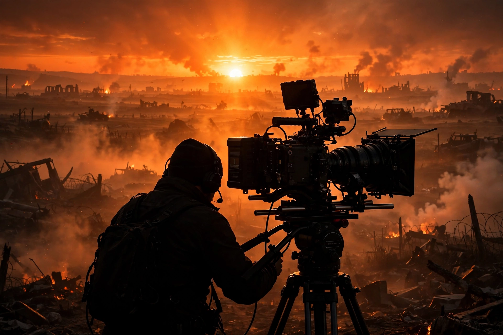

| Born | Roger Alexander Deakins, May 24, 1949, Torquay, Devon, England |
|---|---|
| Occupation | Cinematographer |
| Years active | 1975–present |
| Known for | Long collaboration with the Coen brothers; The Shawshank Redemption, Skyfall, Blade Runner 2049, 1917 |
| Awards | Academy Award for Best Cinematography (×2) |
Sir Roger Alexander Deakins CBE (born 24 May 1949) is an English cinematographer, widely regarded as one of the greatest and most influential of all time. Best known for his long collaboration with the Coen brothers on films including Fargo (1996), The Big Lebowski (1998), O Brother, Where Art Thou? (2000), and No Country for Old Men (2007), he has received five BAFTA Awards and two Academy Awards from sixteen nominations.
Deakins was born in Torquay, Devon, and studied graphic design and photography before attending the National Film and Television School. Early in his career he shot documentaries around the world — including filming a yacht race single-handed — an apprenticeship in available-light realism that left a lasting mark on his unshowy, motivated lighting style. He came up through British documentary at a moment when the Grierson tradition still dominated; see John Grierson and cinéma vérité.
Deakins's feature breakthrough came with Sid and Nancy (1986) and Michael Radford's Nineteen Eighty-Four (1984). His work on The Shawshank Redemption (1994) and Kundun (1997) earned wide acclaim, and O Brother, Where Art Thou? pioneered the full digital intermediate process. After thirteen Oscar nominations without a win — a streak that became an industry talking point — he won for Denis Villeneuve's Blade Runner 2049 (2017) and again for Sam Mendes's 1917 (2019), the latter staged and shot to appear as a single continuous take. His lighting of Skyfall (2012), including its neon Shanghai and silhouette Macau sequences, is frequently cited among the finest digital cinematography of its era.
Deakins favours naturalistic, source-motivated lighting, meticulous composition, and minimal camera movement, insisting that cinematography should serve the story rather than call attention to itself. With his wife James Ellis Deakins he hosts the Team Deakins podcast, discussing the craft with collaborators.